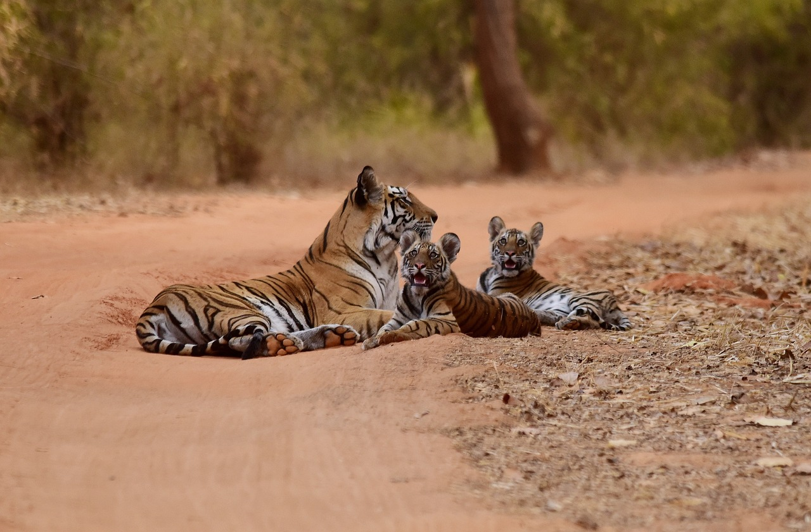
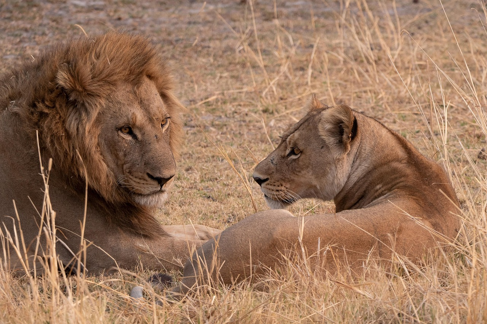
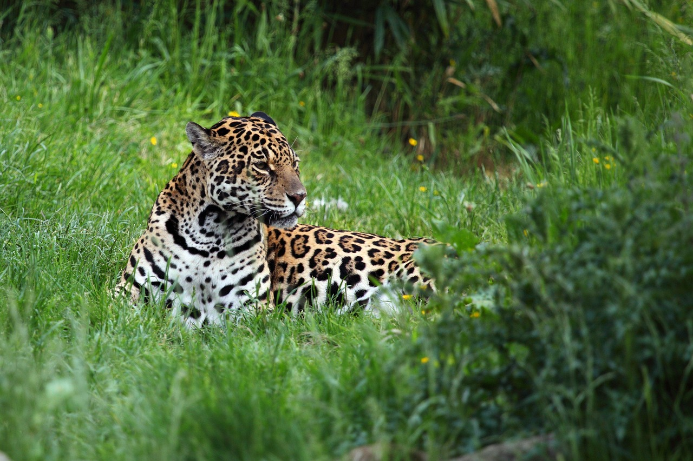
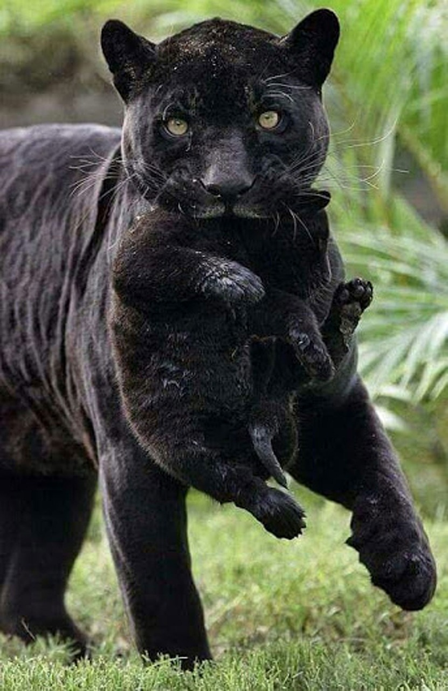
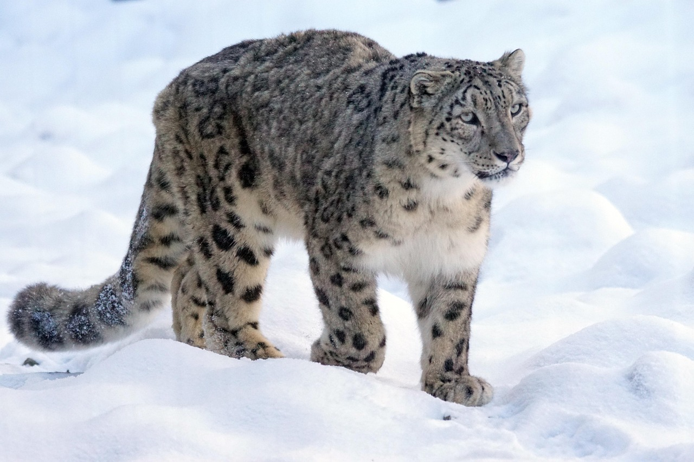

THE BIG CATS
What are the big cats?
The big cats are the Apex pradators in any habitat the occuoy and there are many big 5 big cats
- Tiger
- Lion
- Jaguar
- Leopard
- Snow Leopard
Some people may ask about cheetars and cougars but they are infact more closely related to domestic cats.
1. TIGER

Tigers are the largest living species of cats in the world with an adult male weighing up to 300kg (600lbs) and meauring over 3 meters (10 feet) in lenght.
It has a powerful body with a large head and paws, a long tail ad orange fur with black mostly vertical stripes and they inhabit mainly forests.
Tigers are soliatary animals and females usually gives birth to two or three cubs that stay with their mother for two year after which they become independent and leave their mother's range and establish their own.
2. LION

Lions are know as "Kings of the jungle", they are currently ranging only in the Sub Saharan Africa and India.
Adult male lions are larger than females and have a prominant mane that extends from the head to shoulders and chest.
The lion is the second largest and the most social of all the big cats living in groups called a"pride".
The pride consists of related females and their cubs and few males who are mostly unrelated to the females. Males can also live in groups consisting of males only called a "coalition".
3. JAGUAR

The jaguar is the largest big cat in the Americans and third largest in the world after the Tiger and Lion. They are found mainly in dense forests,wetlands and areas near rivers.
The have a golden coat with spots are rosette shaped"often with a spot in the center". They have an extremelly powerful jaw and have the strongest bite of any big cat.
They are excellent swimmers and soliatary animals and more stockier muscular than leopards.
BLACK JAGUAR

It is not a different species,it is a jaguar with melanism giving it a dark coat where the rosettes are faintly visible.
4. LEOPARD

They are slightly smaller than the jaguar and know for their golden yellow coat covered in rosettes.
The leopard is adapted to a variety of habitats ranging from rainforests to grasslands including montane areas and semi deserts, they can easily adapt to its sorroundings.
They are solitary animals and well known for their strength and adaptability as they can drag prey heavier than theirselves.
Leopards are excellent climbers and like the tigers they are good swimmers.
5. SNOW LEOPARD

The snow leopard is a rare big cat that is adapted to life in the cold,high mountain regions.
They have a thick smokegray fur with dark rosettes,a long fluffy tail which they use for balance and warmth,wide fur covered paws which act as snowshoes.
Unlike lions and tigers,snow leopards cannot roar. Instead, the communicate through growls,hisses and friendly sounding chuff.